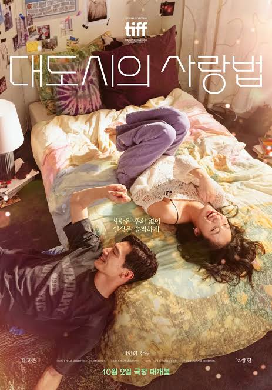
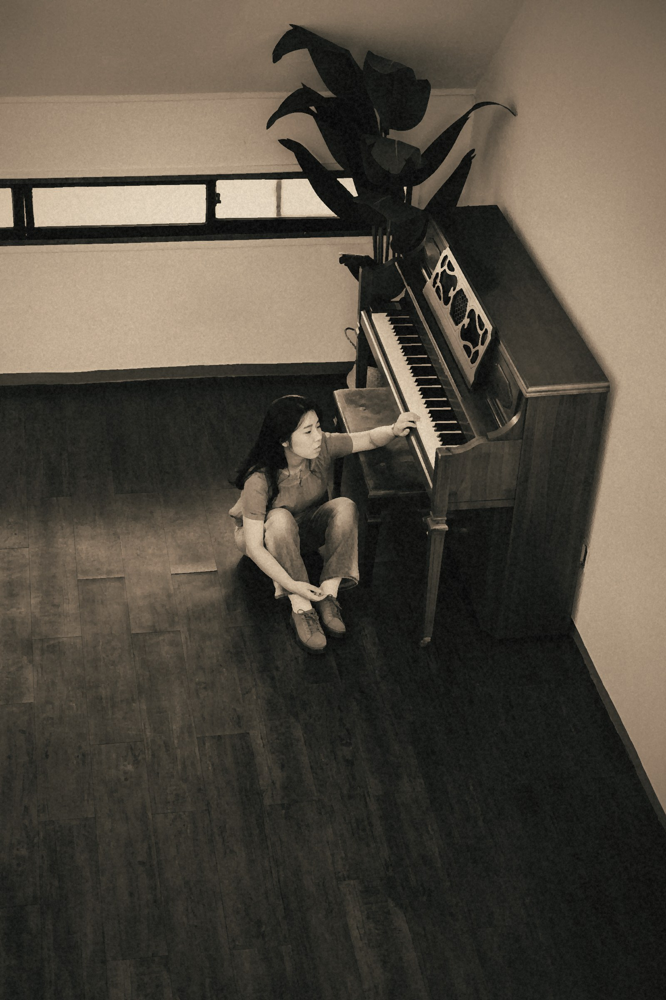
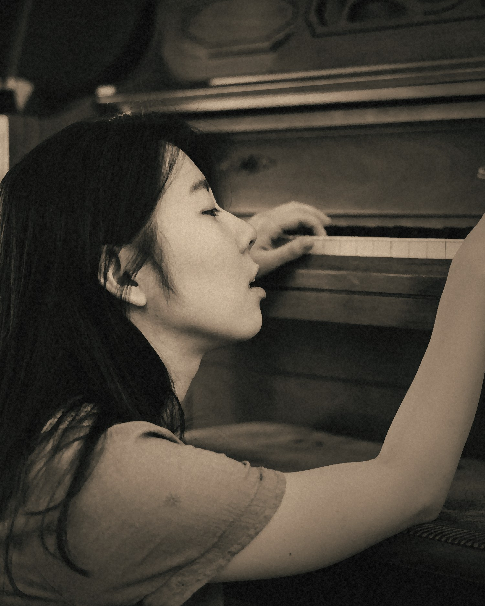
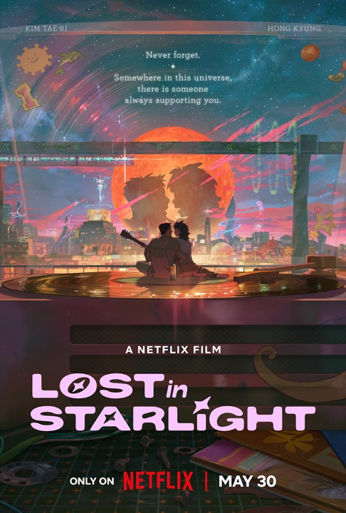
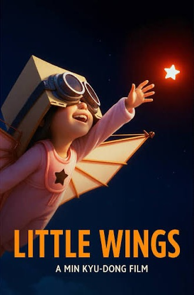
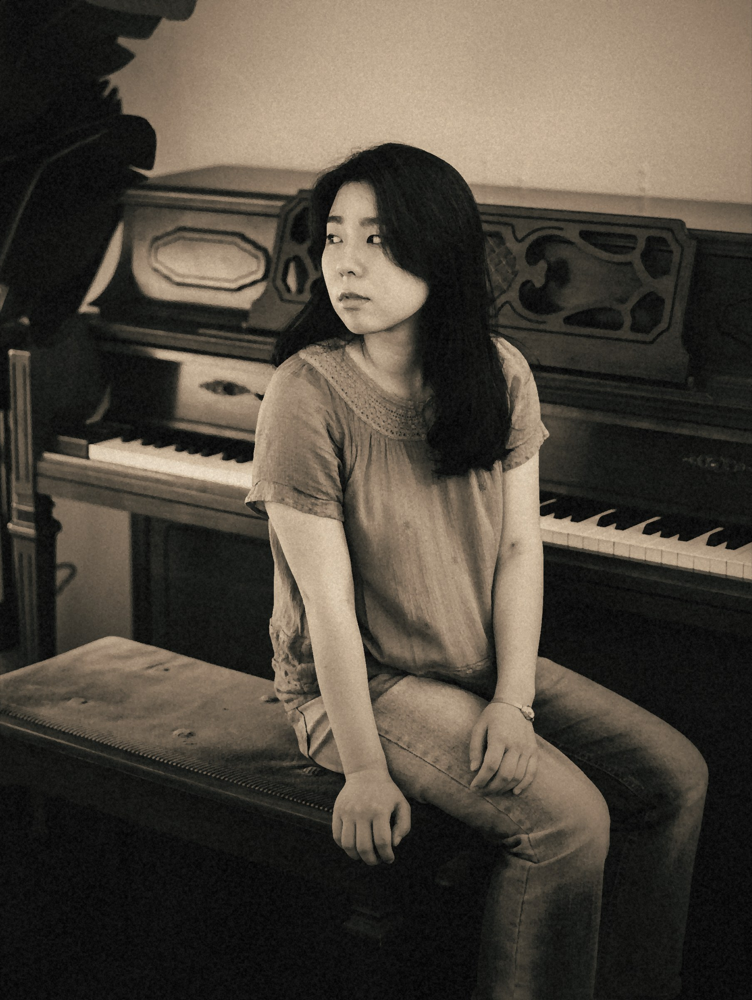

Love in the Big City OST (YouTube, opens in a new tab)
- 1Friends


Singer-songwriter, composer and producer. Synth-pop and acoustic songs from Seoul and Boston.
Listen
Jihette (Jihae Kimm) is a singer-songwriter, composer and producer based in Seoul and Boston. She makes synth-pop and acoustic music.
She debuted as a singer-songwriter with a song co-written with renowned Korean producer Primary. Her songs have since been featured in films and Netflix original series, and she directed the music for a short film by acclaimed Korean director Min Kyu-dong.
She is currently studying at Berklee College of Music on a full presidential scholarship and is supported by the CJ Cultural Foundation.



Five places to hear the songs. Take a tab.
6
Jihette. Synth-pop and acoustic.